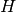

skrf.network.Network.passivity¶
- Network.passivity¶
passivity metric for a multi-port network.
This returns a matrix who’s diagonals are equal to the total power received at all ports, normalized to the power at a single excitement port.
mathmatically, this is a test for unitary-ness of the s-parameter matrix [1].
for two port this is
in general it is
where  is conjugate transpose of S, and is dot product.
Returns : passivity : numpy.ndarray of shape fxnxn References
[1] http://en.wikipedia.org/wiki/Scattering_parameters#Lossless_networks